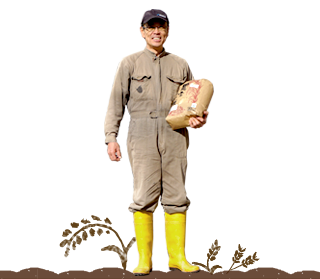
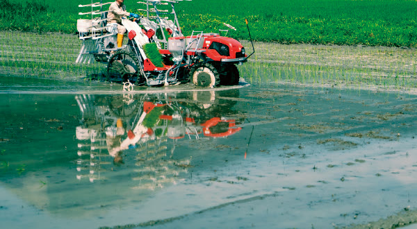
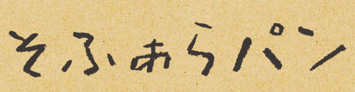
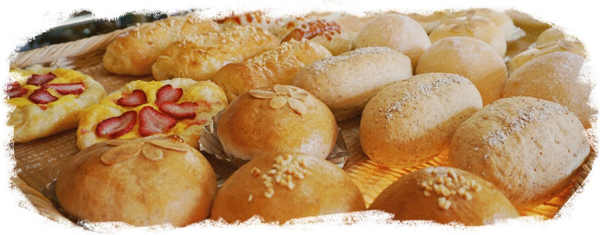
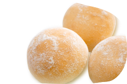
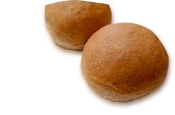
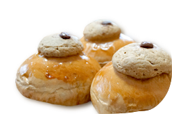
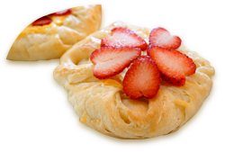
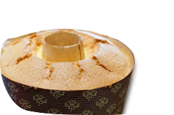

OUR STORY無農薬、だから
無農薬、だから
本物の味がする。
伊吹山の清らかな雪どけ水が流れ込む姉川のほとりで、2007年からすべての稲を無農薬で育てています。春に咲くれんげが田んぼの栄養になり、虫やカエルの声を聴きながら育ったお米は、味わいが濃く、旨味がまるで違います。
「誰もが安心して食べられる米づくりで、たくさんの人に元気と笑顔と健康を。それが、そふぁらの想いです。」そふぁら 筧 太津郎


滋賀県長浜市・伊吹山のふもとから
無農薬・れんげ緑肥で育てたお米と、土日だけ開くパン小屋。そふぁらの恵みを、このサイトからそのままお取り寄せいただけます。
伊吹山の清らかな雪どけ水が流れ込む姉川のほとりで、2007年からすべての稲を無農薬で育てています。春に咲くれんげが田んぼの栄養になり、虫やカエルの声を聴きながら育ったお米は、味わいが濃く、旨味がまるで違います。
「誰もが安心して食べられる米づくりで、たくさんの人に元気と笑顔と健康を。それが、そふぁらの想いです。」そふぁら 筧 太津郎


ほおばると、素材の甘みが口いっぱいに広がる
パン生地には、国産の小麦や自家製粉したそふぁらの米粉を。1日に焼き上げるのは7〜8種類。土日だけの小さなパン小屋ですが、お近くまでお越しの際は、ぜひお寄りくださいね。そふぁら 筧 茂代


米粉パン
きな粉パン
コーヒーパン
デニッシュ
シィフォン